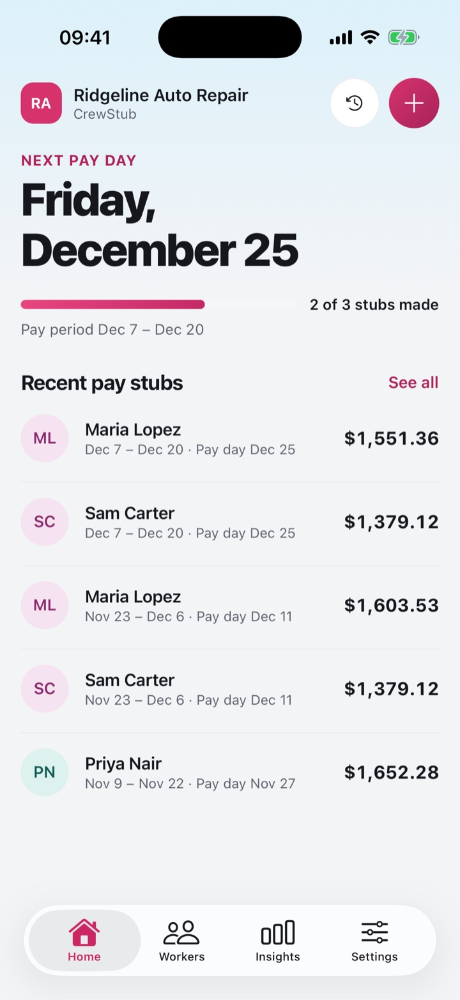
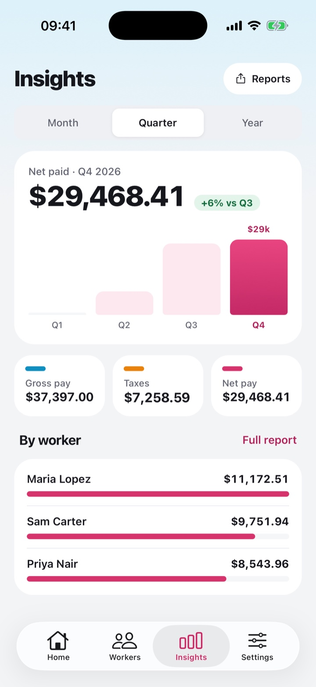
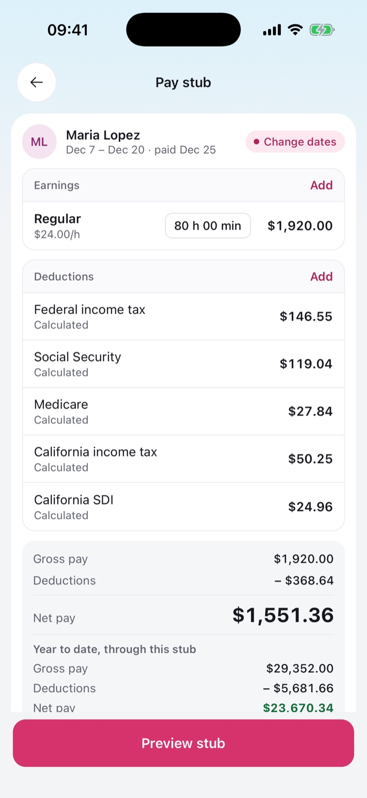
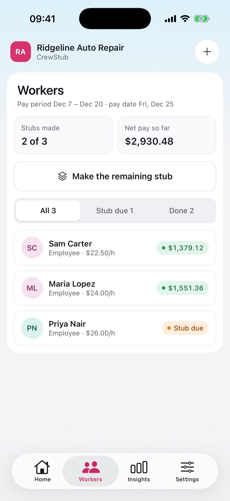

Pay stubs, done in a minute.
Federal and state withholding, year-to-date totals and a clean PDF for every worker. Made for employers with a small crew.
Available on the App StoreFor US employers.


Everything a small payroll needs
Make the stub, keep the records and hand your workers a document they can use.
Withholding worked out for you
Federal income tax, Social Security and Medicare, plus state tax for 37 states. States with no wage income tax need none, and for the few left you type the amount and the stub says so.
Year to date that carries forward
Every stub shows this period and the year so far. Start a worker mid-year with what they were already paid, and edit an old stub to see later ones update.
Employees and 1099 contractors
Hourly, salary, or paid per mile, load, day or piece. Overtime, bonuses at the flat federal rate, paid time off and employer-paid taxes are there when you want them.
Clean PDFs
Four stub designs with your business name and logo. Share it, print it or email it to your worker from your own mail account.
Insights and reports
See net pay by month, quarter or year and by worker. Earnings and deductions reports, year-end totals for W-2 and 1099-NEC time, and spreadsheet exports.
Pay day reminders
Choose weekly, every two weeks, twice a month or monthly, say when your first pay day is, and CrewStub reminds you when it is time.
A look inside
Your workers, your stubs and your numbers, in a few taps.


How it works
Add your people
Name, pay rate and the tax form details they gave you. It takes about a minute each.
Tap +
CrewStub drafts the next stub from the last one. Enter the hours and check the amounts.
Share the PDF
Send it, print it or save it. Your records stay in your account on any device.
What CrewStub is not. It makes pay stubs and keeps records. It does not pay your workers, file or deposit payroll taxes, or replace an accountant. You stay responsible for paying and filing.
Make your next pay stub today.
Set up your first worker in about a minute, then tap + on every pay day.
Available on the App Store